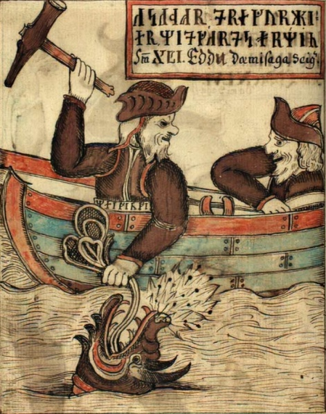

Боги и богини
Один
Один, имя которого означает «Яростный», – безусловный глава богов; его иногда называют Всеотцом, но не слишком часто. Он был богом-воином, но – в отличие от Фрейра – скорее стратегом, чем бойцом. Он обучал избранных героев эффективной тактике боя, в том числе построению клином, или свиньей (свинфюлькинг). Один провоцирует конфликты, решает, кто достоин Вальхаллы и вступления в ряды эйнхериев – братства воинов, которое будет сражаться на стороне богов во время Рагнарёка. Он приносит поражение и победу в битве, может даровать неуязвимость от ударов копья, но иногда поручает решать судьбу битвы своим валькириям.
Один • Предводитель асов. Одноглазый, бородатый, старый.
• Бог мудрости, магии, битвы, королевской власти; ему поклонялась элита, приносились жертвы.
• Атрибут: копье Гунгнир.
• Чертоги: главный – Вальхалла (Чертог убитых), но есть и много других, в том числе Гладсхейм (Обитель радости) и Валаскьяльв (Башня Колдуна), где стоит Хлидскьяльв – высокий трон, с которого Один может взирать на все миры.
• Транспорт: восьминогий конь Слейпнир, но Один нередко путешествует пешком и принимает чужие обличья.
• Животные: вороны (Хугин и Мунин – Мысль и Память); волки (Гери и Фреки – Жадный и Прожорливый).
• Женат на Фригг; многочисленные связи с великаншами и земными женщинами. Сыновья: Тор, Бальдр, Видар, Вали, Хёд.
• Особенно почитаем в Дании.
Один также бог мудрости, который ищет ее повсюду. Он принес жертву Мимиру, бросив свой глаз в колодец, чтобы получить тайное знание, и повесился на мировом древе Иггдрасиль, чтобы познать руны – систему германской письменности, дававшую богам и людям возможность сохранять знания для потомков.
Знаю, висел я в ветвях на ветру
девять долгих ночей,
пронзенный копьем, посвященный Одину,
в жертву себе же,
на дереве том, чьи корни сокрыты
в недрах неведомых.
Никто не питал, никто не поил меня,
взирал я на землю,
поднял я руны, стеная их поднял –
и с дерева рухнул.
Один также знал магические заговоры разного назначения: как воскрешать мертвых, тушить огонь, вызывать ветра. В «Речах Высокого» («Хавамаль») он перечисляет восемнадцать заговоров, но отказывается приводить подробности или раскрывать последний, который не готов поведать ни одной женщине, если она не окажется его возлюбленной или сестрой. Поскольку сестер у него, по имеющимся сведениям, не было и он обычно не ладил с возлюбленными, тайна так и осталась тайной.
Одной из главных забот Одина было выяснить как можно больше про Рагнарёк, конец мира. Для этого он посещал многих в мирах богов и людей. Он узнал, что смерть его сына Бальдра – одно из важнейших предвестий конца, но надеялся, что не допустит, чтобы пророчества о грядущей катастрофе сбылись. Он был опытен в магии особого рода – ее называли сейд. Неизвестно толком, что она собой представляла, но ее обычно практиковали женщины. Когда за нее брались мужчины, они должны были надевать женское платье, – в скандинавской культуре это считалось постыдным. Один и Локи спорят об этом в песни «Перебранка Локи». Когда Один обвинил Локи в том, что тот провел в нижнем мире восемь зим под землей в телах молочной коровы и женщины, рожавшей там детей, Локи парировал, что его кровный брат практиковал сейд на острове Самсей (современный Самсё, между Швецией и Данией) и «бил в бубен, как делают шаманки». Тут вмешалась Фригг, которая призвала богов прекратить спор о таких таинственных, древних материях на публике.
Один был покровителем королей. Он проявлял интерес к земным королям и героям. Он помогал своим фаворитам занять трон и требовал эффективного правления. Помимо подбора лучших героев для Вальхаллы, он наблюдал за смертью правителей и героев, что часто воспринималось как предательство. В некоторых стихах звучат упреки прибывших в Вальхаллу в адрес Одина: они сетуют, что ему нельзя доверять.
Тор
Тор — в германо-скандинавской мифологии громовник, бог-герой и воин, защитник всех миров, непримиримый враг великанов-ётунов. В некоторых исследованиях его также называют богом плодородия.
Тор — сын Одина и богини земли Едр. Поэтому в частности он — самый сильный из асов, и именно ему принадлежит чудесный молот Мьёлльнир — грозное оружие, выкованное карлами.
Скандинавский бог Тор часто ассоциируется с греческим Гераклом, хотя между этими образами есть существенное отличие. В частности, Геракл совершает свои подвиги, находясь на службе, а Тор сражается с великанами и с чудовищами, потому что не может иначе: так он отдаляет день Рагнарёк.
Когда наступит последний день, Тор сразится со своим вечным врагом — со змеем Ёрмунгандом, и поразит его. К сожалению, могучий громовник и сам погибнет в этой битве.
Тор • Рыжебородый, борец с великанами. Вспыльчивый и не особо умный. Управляет погодой, покровитель мореплавания (в Исландии), полей и урожая, ему поклоняются фермеры.
• Атрибуты: молот Мьёльнир, пара железных рукавиц, пояс, придающий божественную силу.
• Чертоги: Трюдхейм (Дом отваги), Билькирнир (с 540 дверями).
• Транспорт: колесница, влекомая козлами.
• Животные: козлы Таннгньёст и Таннгриснир (Сокрушитель зубов и Скрежет зубовный). Этих животных можно убить, съесть, а на следующее утро оживить.
• Женат на Сив Златовласой; сын великанши Ёрд (Земля) и Одина.
• Дети: сыновья Магни и Моди, дочь Труд. В одном из стихов Тор возвращается домой и видит, что дочь обручилась с отвратительным карликом. Бог испытывает карлика Альвиса (Всемудрого) загадками, пока не восходит солнце и тот не превращается в камень.
• Самый важный бог в Норвегии и Исландии.
В скандинавской мифологии Тор (выступающий также под прозвищем Веор, Вингнир, Хлорриди и другими именами)  — бог из рода асов, второй по значению (после Одина), сын Одина и Ёрд (либо Хлодюн, либо Фьёргюн). Ёрд — буквально «земля», а Фьёргюн этимологически тождественно Перкунасу-Перуну и указывает на генетическую связь Тора с балто-славянским громовником. Тор — муж Сив, богини с золотыми волосами (что подчёркивает отношение Тора к плодородию), матери бога Улля. У Тора — дочь Труд и сыновья Магни и Моди, причём Магни рождён великаншей Ярнсаксой. По-видимому, имена сыновей (Магни — букв. «сильный», Моди — букв. «смелый») персонифицируют «силу» Тора. Небесное жилище Тора — Трудхейм. Тор рисуется рыжебородым богатырём, вооружённым боевым молотом Мьёлльниром. Тор ездит в повозке, запряжённой козлами. Молот (Мьёлльнир) — исконное оружие громовника (др.-исл. Mjollnir имеет тот же корень, что и русское слово «молния») — первоначально мыслился каменным, но в «Младшей Эдде» в истории изготовления кузнецами-двергами (карликами) сокровищ асов речь идёт уже о железном молоте. В мифах — это главным образом боевой топор (возвращающийся к владельцу, как бумеранг), которым Тор побивает ётунов (великанов). Молот — специфическое оружие Тора, как копьё Одина, меч Тюра. Великаны стремятся похитить молот (или добиться того, чтобы Тор прибыл в их страну без молота и пояса силы). В основе — мотив похищения громового инструмента демонами, известный также финскому и эстонскому фольклору. Имена козлов Тора — Таннгньостр (Tanngnjostr) и Таннгриснир (Tanngrisnir) указывают на скрежетание зубов и явно восходят к самому феномену грозы, но козёл одновременно имеет отношение и к плодородию. В «Младшей Эдде» козлы выступают не только в роли «коней» Тора, но и служат источником неисчерпаемой пищи (ср. аналогичную ситуацию с вепрем, которым питаются в Вальхалле павшие воины — эйнхерии).
Локи
Локи — в германо-скандинавской мифологии бог-трикстер, бог-провокатор, бог коварства, лжи и обмана. Иногда ошибочно ассоциируется с Логи, который является богом огня.
Локи — побратим Одина, полубог-полувеликан. Его природа двойственна, и поэтому он то помогает асам, то пакостит им. Умный, хитрый, коварный, в мифах он часто выступает в тандеме с Тором. Почти все сокровища, включая Мьёльнир, боги получили именно благодаря ему.
Бог Локи в скандинавской мифологии имеет особое значение, поскольку он единственный из небожителей принимает участие и в создании мира, и в его разрушении. Это уникальная фигура еще и потому, что у него у единственного из древнескандинавских божеств не было культа.
Локи • Сын богини и великана. Красивый, но коварный и непоследовательный. Исключительно хитер, обладает двойственной сексуальной природой.
•Кожа у него бледная, лицо очень красивое и с довольно резкими чертами. Волосы, как правило, длинные и светлые, иногда с медным отливом, а глаза — ярко-зеленые и буквально светятся умом и любопытством.
• Женат на Сигюн. У него два сына; Снорри называет их Вели и Нари или Нарви; «Старшая Эдда» – Нари и Нарви. Отец космических чудовищ, рожденных от него великаншей Ангрбодой: волка Фенрира, змея Мидгарда, богини смерти Хель. Также мать (см. главу 3) Слейпнира, восьминогого коня Одина.
Занимающий странное и двойственное положение Локи – смешанного происхождения, и неясно, на чьей он стороне. Он кровный брат Одина, и высшие боги поклялись не пить пива, пока напиток не будет предложен Локи. Но он постоянно вовлекает других богов в беду, и его неоднократно изгоняли. Порой ему изменяет удача, и в поэме «Перебранка Локи» прямо говорится о его роли в смерти Бальдра; там говорится, что он был пленен и связан вплоть до Рагнарёка. С его наступлением Локи должен будет определиться: сражается он на стороне богов или великанов. Мать Локи, судя по всему, была богиней, а отец великаном; чаще было наоборот: боги заключали союзы с великаншами. Его же связь с великаншей приводит к рождению чудовищных отпрысков. Даже пол Локи не вполне ясен: он был матерью восьминогого коня Слейпнира; забеременел от поедания недоваренного женского сердца; и, по словам Одина, провел восемь лет в нижнем мире в качестве женщины.
Как Локи стал богом? Его природа очень неоднозначная, но, согласно официальной версии, Локи не бог, а наполовину великан-ётун. Просто он постоянно жил в Асгарде и был побратимом Одина.
Символы бога Локи — воздух и молния. Еще одним символом бога Локи в Скандинавии является огонь.
Своего дня у бога Локи нет, но в древности, видимо, соотнося это божество с другим великим трикстером — с Гермесом, его праздник проводился в первой декаде ноября.
Бог чего Локи в мифологии древних скандинавов? Локи — бог обмана и хитрости. По некоторым версиям, Локи также бог огня.
Скандинавский бог Локи не является асом. Он происходит из рода ётунов. Но за его хитрость, ум и мудрость боги разрешили ему жить вместе с ними в Асгарде.
Жену Локи зовут Сигюн. Также у него была ритуальная связь с великаншей Ангрбодой. Дети бога Локи, родившиеся в результате этого союза, волк Фенрир и мировой змей Ёрмунганд, как и их отец, выступят против асов во время Рагнарёка.
Фрейя
Богиня Фрейя — сестра-близнец Фрейра и дочь Ньёрда. Фигурирует в старшей и младшей эддах, и во многих скандинавских и германских легендах.
Богиня Фрейя в скандинавской мифологии — богиня любви и красоты. Ее супругом является загадочный Од, который постоянно отсутствует дома и не принимает участия в авантюрах и интригах богов. Фрейя старается хранить ему верность, но иногда становится участницей опасных приключений. Является владелицей чудесного сокровища — ожерелья Брисингамен, за которое ей пришлось поступиться своей честью.
Фрейя является объектом вожделения многих людей, а особенно — великанов. Иногда она выступает как богиня войны, но главная ее функция — помощь людям.
Фрейя • Одна из ванов. Мастерица устраивать любовные приключения, восхищается любовными песнями. Вместе с Одином выбирает героев для Вальхаллы.
• Атрибуты: летучий плащ из соколиных перьев. Плачет золотыми слезами. Носит ожерелье Брисингамен.
• Чертоги: Фолькванг (Поле людей) и Сёквабеккир (Затопленные скамьи).
• Транспорт: колесница, влекомая кошками.
• Замужем за Одом, который отправился в путешествие; судя по всему, она за это время вступила в связь со всеми, включая собственного брата.
Фрейя обожает драгоценности и украшения, их цена ее не останавливает. Когда она заполучила ожерелье Брисингамен, то даже ложилась в нем спать. Снорри утверждал, что у Фрейи было две дочери:
Герсеми и Хносс. Оба имени означали «сокровище», подчеркивая пристрастие богини к золоту.
Брисингамен, то даже ложилась в нем спать. Снорри утверждал, что у Фрейи было две дочери:
Герсеми и Хносс. Оба имени означали «сокровище», подчеркивая пристрастие богини к золоту.
Богиня Фрейя — прекраснейшая и красивейшая богиня скандинавского пантеона, сестра-близнец Фрейра. Она ванесса, рождённая в следствие ритуального брака матери-земли Нертус и Ньерда — владыки морей и ресурсов. Жилище Фрейи — мир Ванахейм.
Фрейя, скандинавская богиня чувственной любви, дарующая любовь и физическое благополучие, выделяется среди других божеств Асгарда своей особенной красотой и таинственностью. Но одним только этим ее функции не ограничиваются. Она непосредственно связана с миром Одина (отсюда появился стереотип, что фрейя жена Одина, хотя это не так) и присутствует в Вальгалле в том числе в качестве валькирии.
В легенды о Фрейе часто говорится о том, что ее повозку тянут два кота. Об этом дважды упоминает Снорри Стурлусон, он пишет о Фрейе на колеснице с кошками и в “Младшей Эдде”, и в “Видении Гюльви”.
Как звали кошек Фрейи? У Снорри об этом ничего не написано, и это достаточно странно, потому что в скандинавской мифологии названия есть у всего на свете. Причин этого может быть две.
Первая причина — имен у кошек Фрейи действительно не было. Вторая причин — Снорри не знал имен котов Фрейи, и именно поэтому их не знаем мы. Некоторые люди предпочитают давать им имена ее дочерей — Хносс и Герсими.
Хеймдалль
Бог Хеймдалль в скандинавской мифологии – это в первую очередь защитник богов. Он живёт у радужного моста Биврёст в доме под названием Химинбьёрг, что означает «Небесные горы». Хеймдалль охраняет Биврёст, который соединяет Асгард с другими мирами, от ётунов. Также он оберегает Мировое древо Иггдрасиль. В этом ему помогают острые зрение и слух Хеймдалля. Скандинавы считали, что ас может увидеть и услышать практически всё, что происходит в мире.
Хеймдалль • Известен как Белый бог; у него золотые зубы.
• Страж богов, живет на границе божественных владений. Спина у него всегда грязная, поскольку на нее сыплется прах с древа Иггдрасиль.
• Его слух спрятан в колодце Мимира у подножия Иггдрасиля.
• Атрибут: великий рог Гьяллархорн, который прозвучит в начале Рагнарёка.
• Чертог: Химинбьёрг (Небесное убежище).
• Животное: конь Гулльтоп (Златогривый).
• Сын девяти матерей, которые были сестрами. В виде тюленя сражался с Локи; судьба определила им битву с приходом Рагнарёка
Бог Хеймдалль в мифологии играет важную роль в истории о конце света, Рагнарёке. В этот день освободятся хтонические чудовища, и произойдёт последняя битва между ними и асами. Это приведёт к гибели мира и человечества, в которой уцелеют только несколько богов и людей. Хеймдалль и Рагнарек неразрывно связаны, так как о Рагнарёке возвестит именно Хеймдалль, протрубив в свой рог Гьяллархорн. Звук рога будет слышен по всему миру. Он призовёт асов и лучших воинов из Вальгаллы на последнюю битву.
Также во время Рагнарёка разрушается радужный мост Хеймдалля Биврёст, когда по нему проходят огненные великаны. Сам Биврёст хотя и был радужным мостом, но его красная часть считалась огненным основанием. Есть предположения, что сначала мост воплощал собой Млечный путь. Биврёст также соединял землю и небо (мир богов).
Ещё одним популярным мотивом в мифах про Хеймдалля является его вражда с Локи, богом коварства и обмана. Одним из кеннингов (поэтических описаний, метафор) Хеймдалля является «недруг Локи». По мнению учёных, эти два бога являются противоположностью друг друга. Хеймдалль – «бог начала», а Локи – «бог конца». В день Рагнарёка они встречаются и убивают друг друга. До этого Хеймдалль и Локи сражаются также за ожерелье Фрейи, украденное Локи. Они оба в этот момент принимают облик тюленей.
Бальдр
Бальдр — в германской мифологии бог весны. Бальдр — сын Одина и Фреи (Фригг), его братья — Тор и Вали. Его имя имеет несколько разных значений, но самые распространенные из них — “Герой” или “Принц”.
Имя Бальдра упоминается в обеих эддах, а также в датских отчетах саксона Грамматика (12 столетие н.э.). Смерть этого божества стала роковой для всех миров: считается, что в конце-концов его гибель в приведет к Рангарёку.
Жена бога Бальдра — Нанна, их сын — бог справедливости, Форсети. Жило божество в Асгарде, в Брейдаблике — в одном из самых прекрасных чертогов этого мира.
Как выглядел Бальдр? На картинках Бальдра изображают как высокого, стройного молодого человека. У него светлые густые волосы, точеные черты лица и прекрасные синие глаза.
Бальдр • Самый лучший и красивый среди богов; излучает сияние.
• Имеет светлые ресницы.
• Умирает молодым. Вернется с наступлением Рагнарёка.
• Чертог: Брейдаблик (Широкий вид).
• Женат на Нанне, которая отправляется вместе с ним в Хель.
“Второй сын Одина — это Бальдр. О нем можно сказать только доброе. Он лучше всех, и его все прославляют. Так он прекрасен лицом и так светел, что исходит от него сияние. Есть растение, столь белоснежное, что равняют его с ресницами Бальдра, из всех растений оно самое белое. Теперь ты можешь вообразить, насколько светлы и прекрасны волосы его и тело. Он самый мудрый из асов, самый сладкоречивый и благостный. Но написано ему на роду, что не исполнится ни один из его приговоров. Он живет в месте, что зовется Брейдаблик, на небесах. В этом месте не может быть никакого порока”.
Бальдр — сын Одина. По мнению культурологов и скандинавоведов — любимый сын. Самый младший, совершенно непохожий на верховного аса — спокойный, уравновешенный, добрый, никогда не участвующий в распрях и интригах. Вечно юный, он символизировал весну — время, когда все живое просыпалось после тяжелой зимней спячки.
Бальдр в скандинавской мифологии воплощал собой красоту, мудрость и смелость. Его небесные чертоги были такими же светлыми и прекрасными, как и их хозяин.
Фригг
Фригг — жена Одина, мать Бальдра, Хёда и Хермода. Ее отец — великий великан Нат, а мать — богиня земли Фьоргюн. Ее имя упоминается в обеих эддах, и везде ее называют “славнейшей из богинь”.
В переводе с древнескандинавского, Фригг означает “Возлюбленная”. Но это не значит, что Фригг является подобием греческой Афродиты. Скорее, наоборот, богиня Фригг в скандинавской мифологии — покровительница брачного союза, хранительница домашнего очага, и защитница женщин.
По мнению мифологов и скандинавоведов, Фригг — древнее космическое создание. От их брака с верховным асом, Одином, произошел весь род богов. Вечно молодая и прекрасная, Фригг иногда отождествляется с капризной и своенравной Фрейей, хотя по сути она является полной противоположностью ей.
Фригг • Самая важная из богинь.
• Покровительница любви и брака.
• Атрибуты: знает все судьбы. Носит летающий плащ из перьев.
• Чертог: Фенсалир (Болотные палаты).
• Замужем за Одином, мать Бальдра. Ее служанку зовут Фулла.
Фригг — жена Одина, и “статус” супруги Отца богов накладывает на нее определенные обязательства. В частности, она хранит мужу верность — что и отличает ее от любвеобильной Фрейи.
частности, она хранит мужу верность — что и отличает ее от любвеобильной Фрейи.
Хотя, это спорный момент. В “Саге об Инглингах” рассказывается любопытный эпизод. Однажды Один, по своему обыкновению, отправился странствовать, а Фригг осталась в Асгарде. Он так долго отсутствовал, что его братья, Вили и Ве, подумали, что он погиб. Горевать они не стали, и после недолгого спора о том, кому достанется Фригг, оба женились на ней.
Вернувшийся Один вернул себе жену, и никогда не напоминал ей этого. Потому что дело здесь было вовсе не в распутстве, а в архаической форме брака, согласно которой одна и та же женщина могла принадлежать нескольким братьям.
Сам Один в своих путешествиях не хранил верность жене. На этом фоне в поэтических кеннингах это божество именуется соперницей возлюбленных своего супруга.
Фригг знает о человеческих судьбах все, но она не является пророчицей — все-таки, она не вёльва, которую можно принудить к прорицаниям при помощи заклинаний.
Ведомы ей и судьбы богов. Древний миф рассказывает, как, пытаясь уберечь от гибели Бальдра, она взяла заклятие от всех существ на земле, что те не причинят ему вреда. Из вида она упустила только побег омелы. Не потому, что забыла — просто из него оружия не сделать… Именно он и погубил доброго бога.
Ёрд
Именем Ёрд или Йорд в древнескандинавской мифологии обозначали великаншу-ётуна и саму землю. Как ётун, Ёрд также считалась богиней земли. Её имя часто встречается в кеннингах, которыми называли землю. О самой Ёрд мало что известно. Практически не сохранилось легенд о ней. Чаще всего встречаются просто упоминания её имени.
В легендах Ёрд обычно выступает матерью Тора, бога грома и молнии. Ёрд родила его от Одина. Иногда великаншу считали женой Одина. Также Ёрд, возможно, является матерью Дагра или Дага, бога, воплощающего день. Отцом богини называют Анара либо Одина, а матерью – Нотт (Нотту), воплощение ночи.
Имя Ёрд на древнескандинавском пишется как Jörð и переводится как «земля» или «суша». Оно может быть родственно более древним словам, означающим «песок» или «гравий».
Эту богиню называли также следующими именами:
1. Фьёргюн (Fjörgyn) – на это указывают «Прорицание вёльвы» и «Песнь о Харбарде», где Тор обозначен как «сын Фьёргюн». В скальдической поэзии имя Фьёргюн также обозначало землю.
2. Хлодюн (Hlóðyn) – появляется в «Прорицании вёльвы», где Тор выступает как «Хлодюн потомок». Происхождение имени неизвестно. Возможно, оно имеет отношение к богине Хлудане. Её имя упоминается на жертвенных табличках.
3. Fold.
4. Grund.
Сив
Богиня Сив — в древнескандинавской мифологии богиня плодородия, жена Тора. Имя этого божества упоминается в Старшей и Младдшей эддах.
Богиня Сив в скандинавской мифологии упоминается нечасто. В отличие от Фригг, которая н чуждается соперничества с Одином, и от Фрейи, которая часто становилась участницей опасных любовных приключений, она — верная жена и хорошая мать.
Считается, что это божество тесно связано с девами судьбы. Ее имя, возможно, связано с представлениями о роде. Богиня Сив прославилась своими чудесными золотыми волосами (в поэтических кеннингах золото зовется волосами Сив), которые она получила благодаря гнусным забавам Локи.
Скандинавская богиня Сиф (Сив) — достаточно загадочное божество. До встречи с Тором она уже была замужем, и прижила в предыдущем браке сына. Вот
По словам Снорри Стурлусона, богиня Сиф (Сив) также была известна, как пророчица по имени Сивилла. Хотя ее все-таки называли Сиф. Она описывается как прекраснейшая из женщин с золотыми волосами.
В поэтических кеннингах ее называют «женой Тора», «матерью Уллра», «светловолосым божеством», «соперницей Ярнаксы» и «матерью Урура».
Улль
Бог Улль — в скандинавской мифологии бог-лучник. Это сын богини Сив и пасынок могучего громовника Тора. Литературных свидетельство о нем сохранилось очень мало, но все-таки есть все основания полагать, что он играл особую роль в древнегерманском язычестве.
Локи и Улль в мифах вообще никак и никогда не соприкасались. А вот Тор и Улль были весьма близки.
В древних мифах говорится, что Улль является покровителем охотников, и сам ходит с луком на лыжах. Он искусно владеет всяким оружием (один из его кеннингов — “ас щита”) и сведущ в военном деле. Именно его имя призывали древние германцы призывали, когда им предстояло вступить в смертельный поединок.
В “Речах Гримнира” Один рассказывает о том, что Улль поставил свои палаты в долине Идалир.
Скандинавский бог Улль известен достаточно плохо, но в языческие времена он пользовался особым почитанием. Об этом свидетельствует большое количество урочищ с его именем.
В мифологии имя бога Улля встречается в обеих эддах. Но одновременно он продолжает оставаться, наверное, наиболее загадочным божеством.
Тюр
Бог Тюр — в древнескандинавской мифологии бог справедливой войны. В глубокой древности, вероятно, он был также богом неба, и его функции были близки функциям древнегреческого Зевса. Нередко Тюра называли богом битвы.
Также скандинавский бог Тюр является хранителем правил и законов военной юриспруденции, и покровителем сражений.
Вот, что говорит об этом божестве книга “Младшая Эдда. ВИДЕНИЕ ГЮЛЬВИ”:
“Высокий отвечает: «Есть еще ас по имени Тюр. Он самый отважный и смелый, и от него зависит победа в бою. Его хорошо призывать храбрым мужам. Смелый, как Тюр, называют того, кто всех одолевает и не ведает страха. Он к тому же умен, так что мудрый, как Тюр, называют того, кто всех умнее. Вот пример его отваги. Когда асы занимали Фенрира Волка, чтобы надеть на него путы Глейпнир, тот не поверил, что его выпустят, пока ему в пасть не положили как залог руку Тюра. А когда асы не захотели отпустить его, он откусил руку в том месте, которое называется теперь волчий сустав. И потому Тюр однорукий, и не зовут его миротворцем.”
Во времена викингов Один оттеснил и Тюра и Тора, и занял главенствующую позицию.
День Тюра — вторник. Жена Тюра — Зиса, богиня земледелия и плодородия, символом которой был полумесяц и серп. О ней практически ничего неизвестно. Известно то, что этому богу, как и Одину, подчинялись прекрасные валькирии, которые кружили над ратным полем, выискивая достойных мужей, которые после смерти попадали в чертоги Одина. Говорилось, что именно Тюр указывал, какие именно герои достойны того, чтобы жить в Вальхалле и участвовать в последней битве богов.
По мнению древних жителей Северной Европы, Тюр, чье имя ассоциировалось со смелостью и мудростью, руководил белокурыми девами- валькириями, помощницами Одина. Считалось, что именно Тюр выбирал воинов, которые должны были быть перенесены в Вальхаллу, и в последней битве прийти на помощь богам.
Тюр в мифологии скандинавов — однорукий бог. Это увечье было не менее символичным для богов, чем кривизна Одина. Тюр был не просто самым храбрым из всех асов. Согласно древнейшим источникам, Тюр страж правосудия. Именно это божество нужно было молить о даровании победы, что и делали древние саксы и другие германцы на северном континенте.
Хёд
Хёд – бог из числа асов. Его описывают как невероятно сильного бога, который, однако, слеп. С древнеисландского его имя (Ноr) означало «боец». На английский имя передавалось как Hod, Hoder,Hodur.
О том, бог чего Хед, в мифах не говорится. Его родителями были Один и Фригг, правители Асгарда и верховные боги. Братья Хёда – Бальдр (бог света и весны) и Хермод (бог скорости).
В легендах Хёд появляется в основном в связи со смертью его брата Бальдра. Их мать Фригг очень тревожилась за Бальдра. Она обошла всю землю и потребовала, чтобы всё, что ей встречалось, поклялось не вредить богу света. Она упустила только небольшой побег омелы. В разных версиях говорится, что Фригг посчитала его слишком незначительным или молодым. Однако об этом узнал Локи. Он либо просто взял росток, либо сделал из него копьё, дротик или стрелу.
Боги для развлечения пытались поразить Бальдра разным оружием. Но ничто не могло ему повредить. Хёд, будучи слепым, остался в стороне. Тогда Локи вложил ему в руку омелу и предложил направить руку. Когда Хёд метнул омелу, она убила Бальдра. Все боги Асгарда были поражены и опечалены. Локи за это убийство позже заковали и заключили под землю.
Хермод
Бог Хермод в скандинавской мифологии исполнял в первую очередь роль посланца Одина. Также он быфл сыном верховного аса. В некоторых источниках, например, в «Королевском кодексе» Старшей Эдды упоминается термин sveinn Óðins. Он означает «мальчик Одина» в значении «слуга Одина». Но есть более поздний отрывок, где Хермод – «брат Бальдра» (другого сына Одина).
Хермод – ас, который отправляется за Бальдром в царство Хель после того, как Бальдр гибнет из-за обмана Локи. Хотя Хермоду удаётся найти погибшего бога, он не может его вернуть в мир живых. Посланник возвращается к Одину лишь с кольцом Драупнир, которое отдал Бальдр. Кольцо послужило доказательством встречи Хермода и Бальдра.
Хермод появляется в Старшей и Младшей Эдде, а также других произведениях. Есть тексты, где он является не богом, а правителем.
Подробное описание путешествия Хермода в царство Хель содержится в «Видении Гюльви». Ас появляется в тексте в момент смерти Бальдра. Все боги застыли от ужаса и горя. Когда же Фригг смогла говорить, она предложила кому-нибудь из богов отправиться в Хельхейм. Она обещала свою любовь и расположение взамен на то, что Бальдра выкупят у богини мёртвых. Именно Хермод сразу же вскочил на Слейпнира, восьминогого коня Одина, и отправился в путь. В «Видении Гюльви» его также называют «Хермод Удалой».
Вали
Бог Вали — сын бога Одина и великанши Риндр . У Вали есть множество братьев, в том числе Тор, Бальдр и Видар.
Он родился с единственной целью — отомстить за Бальдра , и сделал это, убив Хёдра , который был невольным участником. Позже он связал Локи внутренностями его сына Нарфи. Являясь одним из богов младшего поколения, он выживет после Рагнарёка.
Вали, бог скандинавов, известен как очень меткий стрелок.
Вот так сказано о нем в книге “Видение Гюльви”:
“Али или Вали — так зовут сына Одина и Ринд. Он отважен в бою и очень метко стреляет.”
В обеих эддах говорится, что ему суждено отомстить за сводного брата Бальдра убить его невольного убийцу — Хеда. И это несмотря на то, что на тот момент самому юному асу исполнится только один день. Вот, что написано об этом в книге “Сны Бальдра”:
Нанна

Нанна — в скандинавской мифологии богиня радости, покоя, луны. Жена бога Бальдра, мать Форсети. Имя этого божества встречается в Старшей и Младшей эддах.
Богиня Нанна в скандинавской мифологии упоминается очень нечасто. Ее имя связано с именем Бальдра, и с именем их сына, Форсети.
Также она упоминается в книге “Язык поэзии”:
“Асы пошли на пир, и воссели на троны двенадцать асов, коим надлежало быть судьями. Их зовут: Тор, Ньёрд, Фрейр, Тюр, Хеймдалль, Браги, Видар, Вали, Улль, Хёнир, Форсети, Локи. Были и богини: Фригг, Фрейя, Гевьон, Идунн, Герд, Сигюн, Фулла, Нанна.”
О том, как познакомились Бальдр и Нанна, в древних источниках не говорится ничего.
Когда Бальдр погиб, богиня Нанна умерла от горя. Ее, положили рядом с мужем на погребальный костер, и они оба отбыли в Хельхейм.
Форсети
Бог Форсети — сын Бальдра и Нанны. Это тихий, спокойный ас, имя которого упоминается и в старшей эдде, и в произведении Снорри Стурлусона.
Бог Форсети в скандинавской мифологии — божество правосудия. Он часто выступает на тинге богов посредником. Это справедливое, но одновременно — милосердное божество, которое часто старается помочь, а не осудить.
Часто его отождествляют с Фоситом, фризским богом правосудия.
Вот, что написано об этом божестве в книге “Видение Гюльви”:
“Форсети — так зовут сына Бальдра и Нанны, дочери Непа. Он владетель небесных палат, что зовутся Глитнир. И все, кто приходит к нему с тяжбой, возвращаются в мире и согласии. Нет равного судилищу Форсети ни у богов, ни у людей. Так здесь о том говорится:
Глитнир столбами из золота убран, покрыт серебром; Форсети там живет много дней и ладит дела.”
Браги
Бог Браги — в древнескандинавской мифологии скальдический бог поэзии. По некоторым данным, он сын Одина и Фригг. Имя этого божества встречается в “Младшей эдде” и в “Старшей эдде”.
В переводе его имя означает “Лучший” и “Поэт”. Считается, что имя божества связано со священным опьяняющим напитком — брагой, который аналогичен индийской соме — напитку магов и поэтов.
После трагической гибели Бальдра Локи незваным гостем появился в пиршественной зале. Браги, который сидел во главе стола, категорично заявил, что незваному нет места на этом пиру. Тогда Локи обратился к Одину, с которым когда-то смешал кровь — помнит ли он о том, что дал обет не пить меда, пока не нальют чарку его побратиму?
Верховный ас не мог нарушить обет, и попросил Видара передать кубок Локи. Приняв кубок, Локи провозгласил здравицу во славу всех богов — кроме Браги.
Женой Браги является прекрасная Идунн, хранительница легендарных молодильных яблок.
Вот, что написано об этом божестве в книге “Видение Гюльви”:
“Есть ас по имени Браги. Он славится своею мудростью, а пуще того, даром слова и красноречием. Особенно искусен он в поэзии, и поэтому его именем называют поэзию и тех, кто превзошел красноречием всех прочих жен и мужей. Имя жены его — Идунн.”
Идунн
Идунн — в скандинавской мифологии жена бога Браги. С древнегерманского ее имя переводится как “обновляющая”. Идунн владеет чудесными молодильными яблоками, которые помогают богам сохранять вечную молодость.
Эти яблоки являются одним из сокровищ асов и предметом вечного искушения великанов.
Богиня Идунн — одна из жительниц Асгарда. О ней практически вообще ничего неизвестно, кроме того, что она является хранительницей чудесных молодильных яблок. Кстати, яблоки Идунн имеют немало общего с чудесными яблоками Гесперид.
Вот, что написано об этом божестве в “Вороново заклинание Одина. (Предваряющая песнь)”:
“В доле живёт любопытная диса с ясеня Иггдрасиль раз соскользнула. Родом из альвов, Идунн назвали младшую Ивальди отпрыски старшие”.
Эйр
Богиня Эйр — в скандинавской мифологии врачевательница. Она могла быть как божеством, так и валькирией.
Упоминания об этой богине встречаются в обеих эддах — в прозаической и в поэтической. Также упоминания о богине Эйр присутствуют в скальдической поэзии. Скандинавоведы-мифологи до сих пор не могут прийти к соглашению, была ли изначально Эйр богиней-целительницей, или же у нее были какие-то другие функции.
Эйр также считается одним из воплощений жены Одина, Фригг. В источниках ее иногда сравнивают с греческим божеством врачевания — Гигиеей.
Гевьон
Богиня Гевьон — древнескандинавское божество, которое в некоторых источниках является олицетворением Матери-земли. Ее имя встречается в Старшей и Младшей эддах.
Богиня Гевьон в скандинавской мифологии встречается не часто. Самый известный миф с ее участием рассказывает о том, как хитроумный конунг Гюльви предложил дать ей столько земли, сколько она сможет вспахать на волах за сутки.
Богиня запрягла в плуг своих великанских сыновей-оборотней и вспахала огромное количество земли — целый остров, который потом назвали Зеландией.
Ньерд
Скандинавский бог Ньерд — бог плодородия. Он был тесно связан с культом близнецов. Ньерд является родителем двух божественных близнецов — Фрейра и Фрейи. Также является воплощением морской стихии.
Ньерд живет в Нотауне — это название переводится как “Корабельный двор”. Его дом располагается одновременно на небе и на берегу моря. Это свидетельствует о том, что это божество является владыкой моря. Также ему подчиняется ветер и огонь. Он покровитель мореплавателей и рыбаков и распределитель морских богатств.
Также у этого божества сосредотачиваются земные богатства — недаром его имя напоминает имя богини Нерты: этими богатствами божество может наделять тех, кто его об этом просит.
Фрейр
Фрейр — сын вана Ньёрда и брат-близнец Фрейи. Это достаточно загадочное божество, имя которого часто упоминается в прозаической и поэтической эдде.
Бог Фрейр в скандинавской мифологии — третий по значимости после Одина и Тора. Он принимал активное участие в суде богов, когда тем предстояло решить, какой дар, преподнесенный цвергами, является более ценным. От карлов Фрейр получил сразу два чудесных дара — золотого вепря и корабль, способный уместить любое количество воинов, но при этом легко складывающийся и помещающийся в карман.
Фрейр — в переводе с древнескандинавского “Господин”. Это бог мужества, мира, процветания, солнечного света, хорошей погоды и богатого урожая. В некоторых источниках его имя упоминается в связи с шведским королевским домом.
Бог Фрейр — третий по значению после Одина и Тора. Это сын Ньёрда и брат богини Фрейи. Ему подвластны плодородные дожди и даже солнечный свет.
Фрейр • Один из ванов. Красив. Упоминается как военачальник, но в Швеции чаще почитается как покровитель урожая, погоды.
• Атрибуты: иногда убирает в сторону меч и сражается оленьими рогами; они же будут его оружием во время Рагнарёка.
• Чертог: Альвхейм (Дом эльфов).
• Транспорт: складная ладья Скидбладнир, изготовленная карликами.
• Животное: вепрь Гуллинбурсти (Золотая щетина).
• Женат на великанше Герд (или состоял с ней в связи). Их сына зовут Фьёльнир. Вероятно, имел сексуальную связь с сестрой Фрейей. Считается предком шведских королей.
Бури
В древнескандинавской мифологии Бури — первопредок. В переводе его имя означает “Рожденный”, но сведений о том, кем были его родители, нет.
Он был отцом Бора и дедом Одина, Вили и Ве. Он не играет особой роли, и в мифах упоминается только в качестве “основы всего”: не будь его, не было бы и всего остального.
В скандинавской мифологии Бури встречается в истории о создании всего сущего. Древний миф гласит, что его вылизала из инеистых камней корова Аудумла. Сначала чудесное животное вылизало голову Бури, а потом появилось и все остальное.
Бури был очень красив — и поэтому удивительно красивыми были его дети- боги-асы.
В скандинавской мифологии первое упоминание о Бури появляется, когда Гюльви расспрашивает о начале времен. Он выясняет, что из инея возник не только первовеликан Имир, но и корова Аудумла: из ее вымени текли четыре молочных реки.
Вот как об этом рассказывает “Младшая Эдда. Видение Гюльви”:
“Тогда спросил Ганглери: «Где жил Имир? И чем он питался?» Высокий отвечает: «Как растаял иней, тотчас возникла из него корова по имени Аудумла, и текли из ее вымени четыре молочные реки, и кормила она Имира». Тогда сказал Ганглери: «А чем же кормилась сама корова?» Высокий говорит: «Она лизала соленые камни, покрытые инеем, и к исходу первого дня, когда она лизала те камни, в камне выросли человечьи волосы, на второй день — голова, а на третий день возник весь человек. Его прозывают Бури. Он был хорош собою, высок и могуч”.
Бор
Бор был сыном Бури. О том, кто был его матерью, ничего не говорится. Вероятно, время андрогинов еще не прошло, но одновременно древние скандинавы уже не приписывали прародителю богов женские функции.
У Бора была жена по имени Бестла. Она была из племени великанов — других женщин в еще совсем юном мире попросту не было. Бестла родила Бору трех сыновей — Одина, Вили и Ве, которые стали правителями на небе и на земле.
Вот, что об этом написано в книге “Видение Гюльви”:
“У него [Бури] родился сын по имени Бор. Он взял в жены Бестлу, дочь Бёльторна великана, и она родила ему троих сыновей: одного звали Один, другого Вили, а третьего Ве.”
Сигюн
Сигюн – одна из второстепенных богинь.
Матерью Сигюн называют Фрейю – богиню любви и красоты. Она одна из прекраснейших богинь и происходит из рода ванов. Фрейю считают второй после Фригг, царицы богов и жены Одина. Также эта богиня забирает себе половину воинов, павших на поле боя. Она покровительствует урожаю, плодородию. Асы изучали при помощи Фрейи сейд, искусство магии, которой владели до этого только ваны. Имя отца Сигюн – Ивальди.
Муж Сигюн – Локи, бог коварства и лжи, происходящий из рода йотунов. Локи взял её в жёны после того, как жил в браке с великаншей Агнрбодой. Вместе с Сигюн он жил в Асгарде по разрешению асов, которые ценили мудрость и хитрость Локи. Но затем на пиру у йотуна Эгира он разоблачил асов и асинь, а потом признался, что способствовал смерти Бальдра. После этого Локи приковали к трём камням под землёй. Там он находится до конца света (Рагнарёка). Сигюн была единственной, кто не оставил Локи. С тех пор она находится возле связанного мужа.
От Локи Сигюн родила двоих детей:
1. Нари или Нарви – великан-ётун. Асы в качестве наказания для Локи превратили Вали, брата Нари, в волка. В этом облике Вали разорвал Нари. После смерти последнего боги использовали его кишки, чтобы сделать для Локи железные оковы. Локи не может из них вырваться, т.к. родитель не может порвать кишки своего дитя. В Младшей Эдде есть также йотун Нарви или Нёрфи, отец богини Нотты, воплощающей ночь. Иногда его и сына Локи считают одним и тем же персонажем.
2. Вали – сын Локи, которого превратили в волка. Он разорвал затем своего сына Нари (Нарви). Иногда вместо имени Вали используется Нарви. В таком случае сыновей Локи и Сигюн зовут Нари и Нарви. Это свойственно, например, текстам Старшей Эдды («Перебранка Локи»). Но иногда и там в некоторых изданиях упоминается имя Вали для согласования с Младшей Эддой.
Ангрбода
Ангрбода — великанша, супруга Локи, мать хтонических чудовищ — Хель, Ёрмунганда и Фенрира. Обитает в Железном Лесу и в принципе никак не соприкасается ни с миром асов, ни с миром великанов-ётунов.
Тем не менее, можно сказать, что Ангрбода в скандинавской мифологии сыграла роковую роль: от ее союза с Локи произошел “Фенрира род”, который во времена Рагнарёк уничтожит Асгард и все остальные миры.
Ангрбода — ведьма, но назвать ее вредительницей нельзя: она живет в некоем ином измерении (по некоторым данным — в загробном мире) и контактирует только с теми, кто туда попадает.
Валькирии

Валькирии – сверхъестественные женщины, обитающие в Вальхалле. Они подают вино и мед воинам, которые поселились там. Другая их роль – мчаться верхом на битву, чтобы определить поражение или победу ее участников; слово «валькирии» прямо означает «выбирающие убитых». Иногда Один указывает им, кто должен победить, а иногда они сами выбирают тех, кто должен пасть в бою и последовать с ними в Вальхаллу. Не все короли жаждали чести присоединиться к числу избранных (но мертвых) воинов, предпочитая земное правление. Норвежский король Хакон в своем стихотворении описывает сильные сомнения, даже когда его звали к себе величайшие воины прошлого. Валькирия Брюнхильд была наказана Одином за неподчинение его приказам: она даровала победу более молодому и красивому мужчине. Некоторые земные девушки хотели подражать валькириям и принимали щит, становясь воительницами. Это позволяло им выбирать себе героического мужа, способного избавить их от нежеланного брака
Во время сражения валькирии проносились над сражающимися на крылатых конях. Роль этих дев заключалась в следующем:
1. Они должны были выбрать половину павших воинов, самых достойных. Души этих воинов затем отправлялись в Вальхаллу, где правил Один.
2. Иногда валькириям было дозволено самим решать, кому из сражающихся дать победу. В других случаях они обязаны были одарить победой того, на кого указывал Один. В противном случае следовало наказание. Например, это произошло с Брюнхильдой. Один погрузил её в волшебный сон и сказал, что её выдадут замуж.